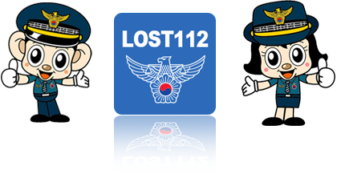
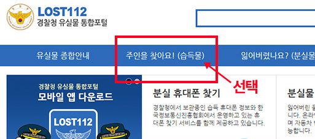
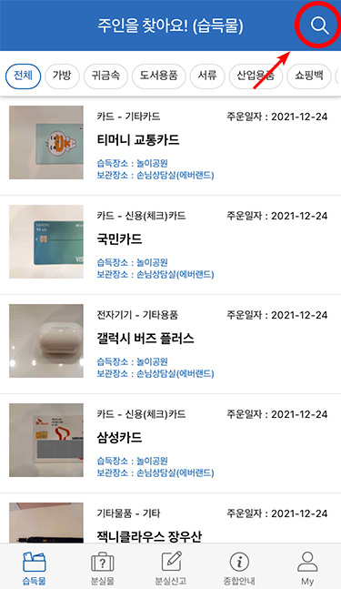
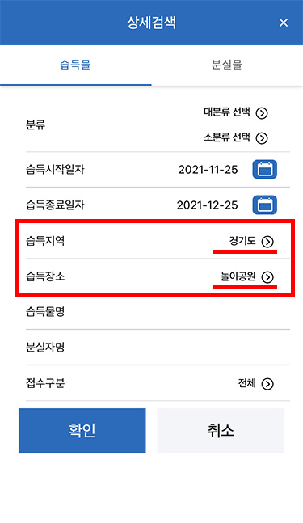

home > 상담센터 > 유실물 확인
유실물 확인
유실물 확인 방법 안내 경찰청 로스트 112 사용
에버랜드에서는 2020년 8월 15일 이후 습득한 유실물을 경찰청 유실물 찾기 시스템인
Lost112에 등록하여 공개하고 있으며,유실물은 습득후 6개월간 보관하고 있습니다.
- 에버랜드에서 분실하신 물품이 있는 경우 Lost112 웹사이트 혹은 모바일 앱을 통해
습득 여부를 확인할 수 있습니다. - pc용 웹사이트:www.lost112.go.kr
- 모바일앱:PLAY STORE 또는 APP STORE 에서 "Lost112" 검색하여 다운로드
PC
PC 용 웹사이트에서는 '주인을 찾아요(습득물)'메뉴 선택 후 기간 설정,
보관장소에 '에버랜드'를 검색하시면 확인하실 수 있습니다.
- 
App
Lost112 모바일 앱에서는 앱 실행 후 검색 시 습득지역>경기도,습득장소>놀이공원으로 선택하시면 에버랜드의 습득물을 확인하실 수 있습니다.
화살표

- 참고사항
- 음식물은 당일 폐기되며,부태되는 젖은 물품 및 사용이 불가능한 물품은 습득 후 2~3일 내 폐기될 수 있습니다.
- 고가의 귀중품은 월1회 용인동부경찰서 생활질서계로 인계하고 있으며,휴대폰은 우체국으로 인계하고 있습니다.
- 2020년 8월15일 이전 유실물은 전화로 문의해주시기 바랍니다.
- 유실물 관련 전화 문의 (각 파크 운영시간 중 통화 가능)
- 에버랜드 손님상담실 031-320-5050
- 케리비안베이 안내 031-320-5085